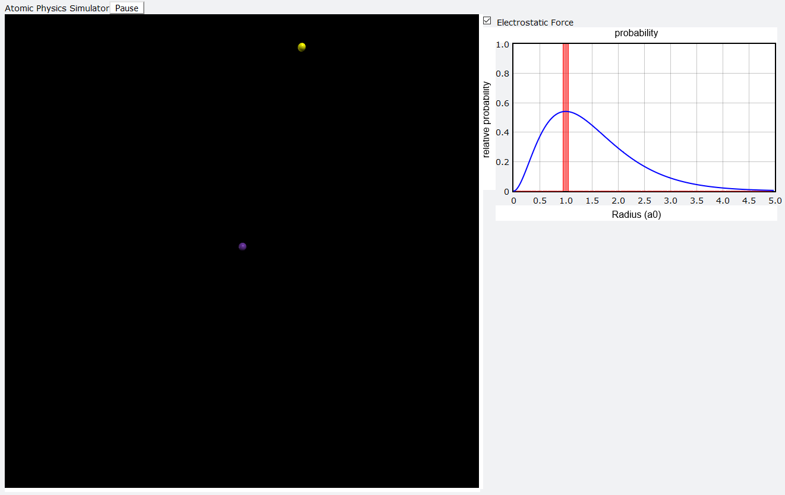

Web Development and Design
My name is Alexander and I am a junior web developer currently looking for web development work. I began developing software as a hobby while I was pursuing my Bachelor's degree at UCSD. What started off as a simple passion project became a fascination for how software is made and shared.
Since then, I have grown into web development where I get to work with some of the most cutting-edge technology available. I see programming as a way to explore a language's potential, to solve problems simple and complex, and to harness the power of a computer. Thank you for stopping by, and if you're interested, feel free to reach out and contact me below.
Contact
alexalford@runbox.ch
(949)202-9536
A mock online retailer website that specializes in selling animals and animal products.
A scientific modeling program for particle physics made in Python using VPython.

A 2D platforming game engine with custom assets. Built from scratch in C using SDL2.
A 2D Game Engine
This project was one of my first major software development projects. The goal of the project was to improve my general programming skill and gain a better understanding of the C language.
Collision Detection and Resolution
One of the first parts of the engine developed was the collision detection and resolution system. This system allowed moving objects to collied with terrain and be ejected reliably and efficiently. Over time the system algorithms was revised several times to more accurately resolve collisions and to detect non-rectangular collisions.
Tiling and Graphics
Alongside the collision detection and resolution, a grid-based tiling system was developed to create the platforms in the game engine. These tiles were drawn with hardware accelerated rendering of select portions of source images. Grid based tiling allows for platforms that are highly optimized in memory and performance.
Object System
The object system allows for the creation of objects that can interact with platforms and other objects according to AI or user input. Objects can store data that is unique to each individual member as well as data that is shared among all of the instances of a kind of object.
Sounds and Timing
One of the later elements added was a sound system that can play queued sounds in addition to background music. Each queued sound is given a specific channel that it can play on so that sounds can overlap. A timing system was also added to control framerate as well as the speed at which the game played.
This program is an atomic physics simulator designed to simulate sub-atomic particles and the forces that they interact with by using VPython's API. The VPython module provides a simple implementation of 3D graphics, vector math, and graphing capabilities that can easily be implemented. GlowScript is a javascript api based off of VPython that, with the help of the RapydScript transpiler, allows the Python script to run in the browser.
This simulation can be paused and reset to its initial state at any time. Scrolling can be used to zoom in and out on the canvas, while holding shift and dragging with your mouse can pan it. While running, the average electron orbital radius is graphed in real time and the electrostatic force can be changed at any time by the user to alter the orbit.
This web app uses MongoDB Atlas to store and provide its product data. By using an access key to the data cluster, the server can access the document collection for the prop products and perform read operations on them. The data is loaded server-side with the help of Mongoose to simplify MongoDB driver details. Once the data is loaded, it is sent to an api endpoint that the client-side application pulls from. Server routing and the RESTful api is controlledusing Express functionality. The client can post a request to the server to load filtered response data from the database based on given criteria.
Fordington is an imaginary online retailer that sells animals and animal products. The purpose of this project was to experiment, develop, and deploy a web app that uses React and MongoDB to create a client-server model that allows the user to interact with a cloud database in ways that mimic popular online retailers like Amazon. Data for the website was generated and is accessed with MongoDB Atlas while content is rendered with individual react components that respond to state changes. I used Heroku to deploy the app as a live demo that anybody can try.
The demo provides a functional product page allowing the user to inspect items, add them to their carts, go to checkout, modify their order, and then send it out. In addition, the user can query for specific kinds of items and adjust how many items are displayed. A nonfunctional sign in and register page are provided to complete the environment.
The client side of this web app is rendered dynamically with React. The website is composed of nested react components that use a mixture of hooks, props, and pure javascript for interactivity. Data from the api endpoint is loaded for the home page by use of a state variable whose hook sets the state and re-renders every time it's called. JSX allows for easy incorporation of javascript functionality into html giving an interactive user interface for the user's cart that allows items to be added and removed while the page is visibly updated. Bootstrap 5 is used to style the website along with custom edits. The Bootstrap classes provide styling that adjusts with screen dimensions for platform independent websites.